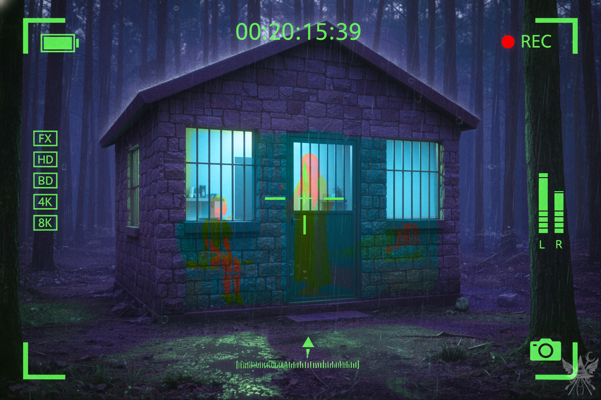
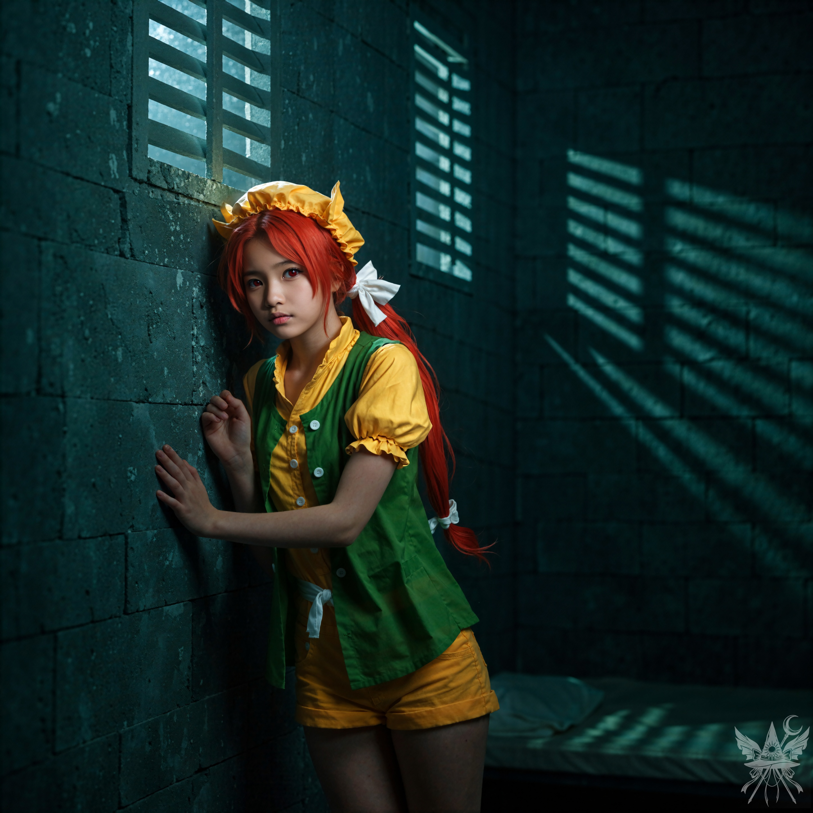

第11章 牢獄からの脱出

冷たい雨が容赦なく降り注ぐ深夜の森。生い茂る木々の湿気と底冷えする空気を、分厚いデジタルのフィルター越しに眺めるのは、どこか奇妙な倒錯感を伴っていた。冷徹な観測装置を通した視界は、対象をただのデータとして切り離し、絶対的な安全圏からの覗き見を許容している。
「小兎姫が帰るまで待った方がよさそうですね。ここで騒ぎを起こしたら、面倒なことになるでしょう」
「そうね。里香は強い子だから、説教くらいどうってことないでしょう。問題はもう一人の囚人ね。どうする？」
「小兎姫を出し抜くなら、全員解放しましょう」
「いいけれど……その子の面倒はメデアさんが見てよね」
一時間ほど息を潜める。ようやく深夜を回った頃、乱暴に鉄扉が閉められる重低音が響き、冷たい夜気の中へ一つの影が飛び去っていく。
「よし、行くわよ」
理香子は躊躇いなく雨の中へ踏み出し、傾いた石造りの独房へと歩み寄る。
「でも、鍵がかかっているでしょう？」
「壊すしかないわね。他に方法がないもの」
白衣のポケットから無骨な金属の塊が取り出される。それは生き物のように軋みを上げながら展開し、あっという間に巨大なロボットアームへと姿を変えた。冷たい雨に濡れる人工的な関節の駆動音は、この古びた遺跡の森にはひどく不釣り合いだ。
（あんな巨大な質量をどうやって……。やはり、理香子も魔法使いというわけね）
油圧の唸り声と共に、アームが容赦なく独房の扉へ叩きつけられる。凄まじい破壊音と共に蝶番が吹き飛び、重い鉄扉が石畳にめり込んだ。
粉塵と雨の匂いが混じる短い廊下の両脇には、独房が一つずつ口を開けていた。しかし、鉄格子には半透明の膜が張られ、不気味な薄紫色の魔力を放っている。
「ちぇっ、前はこんなものなかったのに。あのバカ、少しは学習したみたいね。仕方ない、牢屋ごと破壊するしかないか……」
「一体、どうしたんですか？」
「この膜、見た？ 小兎姫ったら、格子に魔法の防御フィールドを張ったのよ。こんなもの解除するより、壁を壊した方が早いわ」
再びアームが振り上げられ、容赦なく石壁へと叩きつけられる。崩落の轟音と粉塵が狭い空間に充満した。
「おーい！ 誰だ！？ 理香子かーっ！？」
「ええ、そうよ！ 今助けるから、格子から離れて耳を塞いで！」
「ちょっと待って！ 隣の部屋にも女の子がいるのです！ そいつも助けろっての！」
「分かったわよ！ 二人とも助けるから、ちょっと黙ってて！」
さらに壁を砕こうとする理香子を、咄嗟に制止する。
「朝倉さん、ちょっと待って。問題は格子ではなくて、あの光でしょう？」
「ええ、そうよ。格子を強化する魔法みたいだけれど……それで？」
「ちょっと試してみたいことがあるんですけれど、よろしいですか？」
「どうぞ。メデアさんは魔法使いだって言っていたものね」
「まあ、見習いですけれど、一応……」
鼓膜をつんざくような里香の怒声が響き渡る。
「ちょっと！ 何やってるのです！？ 早く出してくれっての！ あの紫ババアの説教はもうたくさんなのです！ それに、隣のヤツも弱ってるみたいなんだよ！ 早くしてくれっての！」
「里香は説教されて当然よ！ また河童のところに行っていたんでしょ？ あんなにやめてって言ったのに！」
無意味な口論をBGMに、静かに魔導書を開く。幻想郷の濃密な魔力に呼応し、紙面が微かな熱を帯びた。
（開錠の呪文ね。故郷ではせいぜい納屋の鍵を開けるのが関の山だったけれど、ここなら……）
使い慣れた呪文を紡ぎ、紫色の障壁へと手をかざす。拮抗する力と力の波紋が広がり、やがて防御フィールドは霧散するように消え去った。
「すごいわ！ 防御フィールドが消えた！ こんな呪文、初めて見たわ。メデアさん、なかなか面白い魔法を使うのね」
「壁を壊さないって？ なら早く出してくれっての！ もうこんなとこに一秒たりともいられねぇのです！」
「分かったわよ！ 今出すから、格子から離れてなさい！」
理香子がアームの狙いを鉄格子へと変更するのを見届け、薄暗い廊下の奥、もう一つの独房へと歩み寄る。
「大丈夫ですか？」
静かに声をかけると、埃っぽい暗がりの奥で、微かな衣擦れの音がした。
呪文で枷を解き、重い鉄の扉を押し開ける。

軋む蝶番の音が冷たい石壁に反響し、生乾きの土とカビの不快な臭いが鼻腔を突いた。高い小窓から差し込む青白い月光が、鉄格子の影を鋭利な刃のように床へ落としている。ひどく冷え切った牢獄の空気の中で、そこにうずくまる温かな熱源だけが、ひどく場違いな存在感を放っていた。怯えを含みつつも、隙あらば逃げ出そうとするような、野生動物めいた警戒心に満ちた視線がこちらを射抜く。
「ん……？ あいたっ……！ ……本当にわたしじゃないの！ わたし、何も悪いことしてないから……！」
暗がりから紡がれる声はひどく掠れ、ひんやりとした空気に溶けて消えそうだった。
「もう大丈夫。あなたは無罪よ」
魔導書の淡い光を頼りに一歩踏み出し、手を差し伸べる。
「無罪……？ 本当に無罪なの……？ よ、よかった……ううっ……」
壁を伝い、よろめきながらすがりついてきたその手は、ひどく冷え切っていた。
「大丈夫。しっかりして」
力を込めて立ち上がろうとするものの、泥のように重い身体はあっけなく崩れ落ちる。
「ごめん……歩けないみたい……。わたしのこと、置いていかないで……ね？」
「おい！ 何やってるんだよ！？」
背後から、己の解放を勝ち取った里香が、さも自分が救世主であるかのような態度でふんぞり返っていた。
「この子、一人で歩けないみたいなの。どうしよう？」 （しまった。勢いで犯人を出した上に、こんな足手まといを引き受けるなんて……）
「背負ってあげなさい」
理香子が当然のように宣告する。
「あたいが背負ってやるっての！ ジェットパックさえあればなぁ！」
弱り切った少女は、それでもローブの裾を握りしめようと身じろぎし、ひどい咳き込みに襲われた。
「あなた、やっぱり歩けないみたいね。しっかり掴まって」
仕方なく、ひんやりとした細い腕を自身の首に回させる。
「まったく、あの正気じゃねぇババアのせいで、こんなことになったっての！」
ぶつぶつと悪態をつきながら、里香が反対側から少女の身体を支え、土の匂いが立ち込める牢獄から外の雨夜へと連れ出した。
「ありがとう……！ わたしはオレンジっていうの。あなたたちは？」
「私は理香子。このおバカは里香、私の同僚よ。で、あなたを助けてくれたのは、このメデアさん」
「うん、はじめまして……」
泥濘む芝生の上にへたり込み、荒い息を吐き出す。
「大丈夫？ 無理しないで」
「ええ、何とか。でも……呪文の使いすぎで、ちょっと……ごめんなさい、もう歩けないわ……」
「分かったわ。里香、あんたがジェットパックで、メデアさんとオレンジを運んであげて」
理香子は白衣のポケットを探り、折り畳まれた無骨な金属の塊を乱暴に放り投げた。
「予備のジェットパックよ。ちゃんと整備済みだから、安心して使って」
「えーっ！？ なんであたいが……！」
文句を垂れながらも、里香は手慣れた動作で装置を背負い込み、駆動音を轟かせた。
重力に逆らう推進力を頼りに、巨大な金属の塊――ミミちゃん――の元へ辿り着く。冷ややかな装甲の上にオレンジと向かい合うように跨り、理香子に後方から支えられる。腹の底を揺らすような低い震動と共に、ミサイルは夜の闇を切り裂くように滑り出した。
背中にもたれかかってくるオレンジの重みと体温を感じながら、上空の刺すような風に目を細める。その周囲を、里香がけたたましい爆音を立てながら、まるで水を得た魚のように飛び回っていた。
「ちょっと、里香！ 危ないって！」
風を切り裂く理香子の怒声。
「大丈夫だっての！ あたいは平気だし！」
豪語した直後、漆黒の木立に激突しかけ、慌てて火を噴きながら急旋回する。
「だから言ったのに！ 本当に危ないんだから！」
呆れ果てた溜息が夜風に溶ける。
「説教をもう一回聞くくらいなら、頭を強く打った方がマシだっての！」
分厚い雲に遮られ、星明かりすら届かない絶対的な暗闇。理香子がどうやって航路を計算しているのか皆目見当もつかないまま、容赦なく体温を奪っていく暴風に耐え続ける。
（かつては本物の魔女のように、夜空を自由に飛び回ることを夢見ていたけれど……。どんな願いも、叶い方は自分の思い通りにはならないものね……）
やがて推進音のピッチが下がり、見覚えのある風化した石柱群が濃霧の向こうから姿を現した。
「ひゃっほーい！ この愛しの廃墟をもう二度と見れねぇかと思ってたのです！」
着地するなり、里香は歓喜の声を上げ、力なく眠りこけるオレンジをミサイルの装甲から引き摺り下ろした。
「その子を早く地下に連れて行って。私は食事の準備をするから」
「食事だって？ いい響きなのです！ 腹ペコペコだっての！」
疲労で感覚の鈍った足で地面を踏みしめ、よろめきながらオレンジの身体を支える。無骨なコンクリートの地下通路を、何度も息を整えながら奥へと進んだ。
「ねえ、里香。さっき通った高い天井の広い部屋、何だって言っていたかしら？」
「あれ？ あれは格納庫なのです！」
「飛行機でも置いてあるの？ それともヘリコプター？」
「飛行機？ そんなもんいらねーっての！ こんなにイカしたジェットパックがあるっつーの！ コンパクトで速くて、持ち運びにも便利なのです！」
油にまみれた機械への異常な執着に、思わず言葉を失う。
「……それで、その格納庫でちょっと儀式をやらせてほしいのだけれど、構わないかしら？」
「何も壊さねーよな？」
「ええ、もちろん。何も触らないわ。ちょっとした呪文を唱えるだけよ」
「なら、別にいいっての！」
キッチンスペースを通り過ぎる際、無機質な笑顔を貼り付けたメイドロボットのる～ことが、滑らかな動作で一礼し、給湯器のスイッチを入れるのが見えた。理香子はすでにテーブルに広げた図面を睨みつけている。
金属の冷たさと潤滑油の匂いが支配する巨大なドーム状の格納庫。壁面を埋め尽くす無数のLEDインジケーターが、人工的な星空のように瞬いている。圧倒的な科学技術の結晶のど真ん中で、古典的な魔術儀式を執り行うという矛盾が、ひどく滑稽で、同時に蠱惑的でもあった。
ポケットからチョークを取り出し、冷たいコンクリートの床に幾何学模様を描き出していく。ロウソクなどの小道具は不要だ。地下深くから湧き上がる途方もない魔力の脈動が、足の裏から全身へと流れ込んでくる。その奔流に身を委ねるだけで、魔法陣は恐ろしいほど容易に完成した。
「フレデリカ・ベルンカステル……」
唇から紡がれる言霊に呼応し、チョークの粉がシアン色の鮮烈な光を放ち始める。
「……おいでなさい！」

空間そのものが軋みを上げて歪み、強烈な青緑の魔光が金属パネルの壁を冷たく照らし出した。ルーン文字が高速で回転し、空中に穿たれた穴の向こう側――ホログラムのような魔術スクリーンの先に、見慣れた光景が浮かび上がる。
（ちょっと待って……これって私の部屋？）
遠く離れた故郷の自室。その中心で、優雅なティーカップを傾ける女の姿があった。冷ややかな視線が、カップの縁越しにこちらを射抜いている。緊迫した逃避行の最中にあるこちら側と、絶対的な安全圏で紅茶を嗜むあちら側。空間を繋ぐスクリーン一枚が、両者の埋めようのない隔絶と圧倒的な余裕の差を残酷なまでに突きつけてきた。
「やれやれ、名字は必要なかったわね」
フレデリカは微かに唇の端を上げ、静かな声音で告げた。
「あの……なぜこちらへ来てくれないのですか？ 指示通りにしたはずですが……」
「儀式自体に問題はなかったわ。とても上手にできているわよ。ただ、ちょっと残念なお知らせがあるの」
「私の家に住み着いたということ以外に、ですか？」
「泥棒に入られたくはないでしょう？ 私はここで留守番をしながら、あなたのことを色々と学ばせてもらっているわ。何か不満でも？」
「そういうわけではありませんが……少々予想外でしたので」
「予想外というのは、そういうものよ。メデアはまだ、世界のほんの一部を見たに過ぎないわ。ところで、幻想郷はどうかしら？」
「実に素晴らしいです。魔法が、まるで呼吸をするように自然に扱えるのですよ！」
「そうでしょう？ でも、残念ながらもうじきそこを離れてもらうことになるわ」
「それが……『残念なお知らせ』なのですか？」
「物分かりがいいわね。前に、幻想郷に招待してほしいと頼んだでしょう？ あの後、何度も試してみたのだけれど、どんな術式を用いても、私は幻想郷の結界をすり抜けられないの。だから、メデアの課題は少し難しくなるけれど……きっとあなたの気に入ると思うわ」 （奇跡の魔女すら阻む結界……。幻想郷という場所は、私が考えていた以上に異常な空間のようね）
「フレデリカ……さん？ 私が口出しすべきことではないと承知していますが……一体何が起きているのか、説明していただけませんか？ 召喚も阻まれるようですし……そもそも、なぜそこまでして幻想郷に執着なさるのです？」
「おやおや、質問が多いこと。言ったはずよ？ あなたには関係のないことだと。……まあ、そこまで気になるというのなら教えてあげる。私には、幻想郷でやり残したことがあるの。そして、私を追い出した者たちに、少々お仕置きをしてやろうと思ってね。だから、あなたは幻想郷の内部ではなく、隣接する世界のどこかで私を召喚し直さなければならないのよ」
「隣接する世界……魔界や、地獄のような場所ですか？」
「あら、メデアったらもう私より詳しいじゃない。他には、夢幻館という独立した空間もあるそうよ。あっ、そうだわ。夢月(むげつ)と幻月(げんげつ)という悪魔の姉妹が作った夢幻世界もあったわね……でも、そこはメデアには少し敷居が高いかしら。だから……魔界、地獄、夢幻館の三つの中から選んでみなさいな」
「なるほど……それで？ その世界で、同じようにあなたを召喚すればよいのですね？ 力の源を見つけて……」
「ええ、その通り。言葉にするのは簡単だけれど……実現するには、並大抵の努力じゃ足りないわよ。……さて、必要なことはすべて理解できたかしら？」
「はい、問題ありません」
「それじゃあ、またね。何かあったら、いつでも連絡してちょうだい」
白磁のカップが傾けられ、最後の一滴が飲み干されると同時、シアン色の魔術スクリーンは硝子のように砕け散り、跡形もなく空間から消え去った。
圧倒的な魔力の余韻と、突きつけられた新たな試練の重みを噛み締めながら、ゆっくりと居住区画へと足を踏み入れる。
「メデア様。先ほどから三度目のお伺いとなりますが、就寝前のお茶はいかがなさいますか」
無機質なメイドロボットが、感情の欠落した声で正確に問いかけてきた。
「え？ ああ……はい、いただきます」 （この得体の知れない遺跡でも、意外と歓迎されているようね。……さて、明日はどう動くべきかしら……）